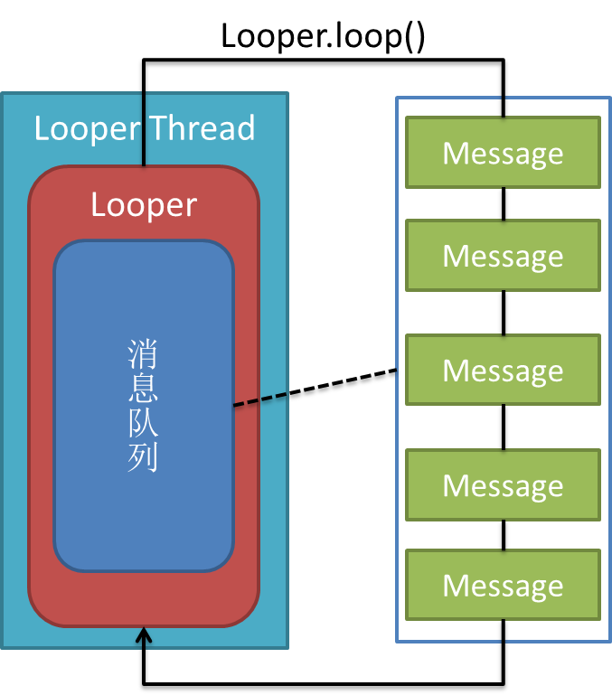
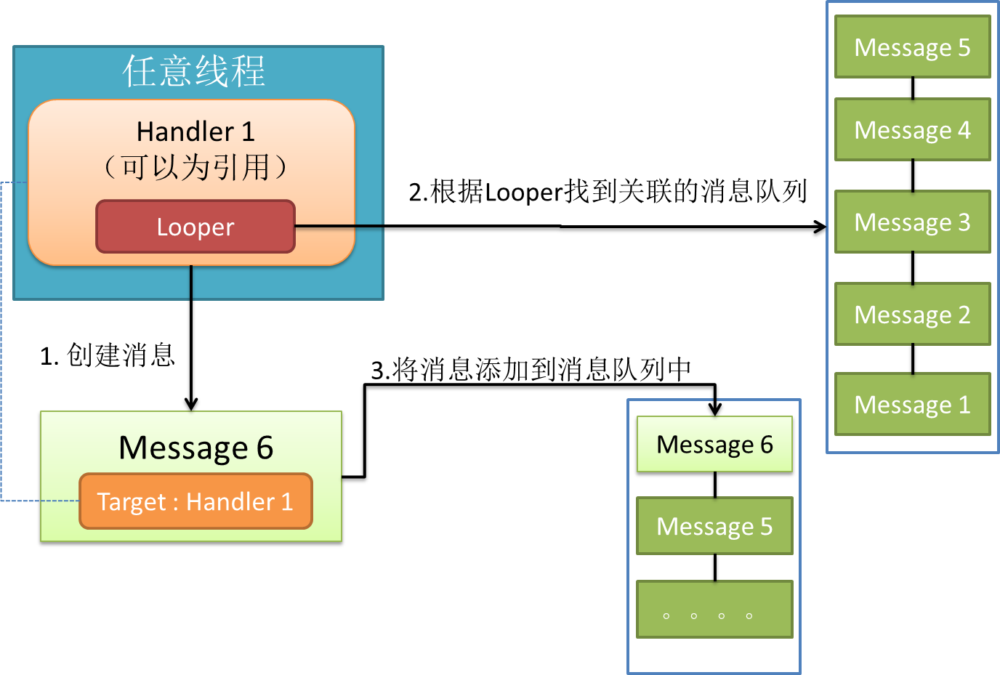
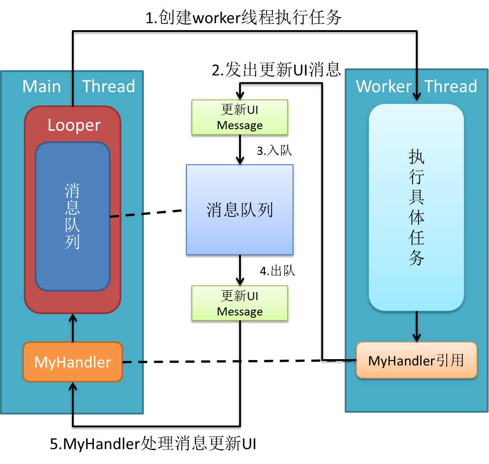

- Introduction
- 1. Command
- 2. Shared Libraries
-
3.
Linux Tools
- 3.1. Linux Basic
- 3.2. Linux工具進階
-
3.3.
工具參考篇
- 3.3.1. gdb 調試利器
- 3.3.2. ldd 查看程序依賴庫
- 3.3.3. lsof 一切皆文件
- 3.3.4. ps 進程查看器
- 3.3.5. pstack 跟蹤進程棧
- 3.3.6. strace 跟蹤進程中的系統調用
- 3.3.7. ipcs 查詢進程間通信狀態
- 3.3.8. top linux下的任務管理器
- 3.3.9. free 查詢可用內存
- 3.3.10. vmstat 監視內存使用情況
- 3.3.11. iostat 監視I/O子系統
- 3.3.12. sar 找出系統瓶頸的利器
- 3.3.13. readelf elf文件格式分析
- 3.3.14. objdump 二進制文件分析
- 3.3.15. nm 目標文件格式分析
- 3.3.16. size 查看程序內存映像大小
- 3.3.17. wget 文件下載
- 3.3.18. scp 跨機遠程拷貝
- 3.3.19. crontab 定時任務
- 3.3.20. trace-cmd
- 3.4. Doxygen
- 3.5. Jdbshell
- 4. Beej's Quick Guide to GDB
-
5.
Android note
- 5.1. android resource
- 5.2. 什麼時候用startService，什麼時候用bindService
- 5.3. android的消息處理機制（圖+源碼分析）——Looper,Handler,Message
- 5.4. Android中Handler Runnable與Thread的區別詳解
- 5.5. Android Service與Native Service
- 5.6. Handler, Message, Looper, MessageQueue
- 5.7. Android 各層中日誌打印功能的應用
- 5.8. Android指令和命令參數
- 5.9. Android中進程與進程、線程與線程之間如何通信
- 5.10. startService的創建過程
- 5.11. service組件-bindService源碼分析
- 5.12. [轉]Android 執行緒 - Thread 與 Handler
- 5.13. [轉] Android 執行緒 - Runnable 與 Handler
- 5.14. [轉] Android 非同步任務 - AsyncTask
- 5.15. [轉]Android.mk 組織結構
- 5.16. 如何下載編譯Android goldfish(Kernel)
- 5.17. 自己動手編譯android源碼
- 6. Ubuntu
- 7. QEMU
- 8. Linux Device Driver Programming
-
9.
fcamel
- 9.1. [轉]ld, ld.so 和 ldconfig 的行為
- 9.2. [轉]解決 undefined symbol / reference
- 9.3. [轉] 列出用到的 shared library
- 9.4. [轉]用 LD_PRELOAD 替換動態連結的函式庫
- 9.5. [轉] 用 strace 和 ltrace 找出用到的 system call 和 library call
- 9.6. [轉] 加速 linking time
- 9.7. [轉] 從 C 呼叫 C++ 函式的過程理解程式編譯、連結的原理
- 9.8. [轉] 對 C++ 的觀感
- 9.9. [轉]在 Linux 下開發 C/C++ 的新手指南
-
9.10.
[轉]瞭解 C/C++ 程式行為的技巧
- 9.10.1. 查 C/C++ symbol 定義的方法
- 9.10.2. 閱讀 C/C++ 原始碼的好幫手
- 9.10.3. 配合 c++filt 讀程式
- 9.10.4. 加速 gdb 載入 symbol 時間
- 9.10.5. 在 x86-64 上對 system call 使用 conditional break
- 9.10.6. 用 strace 找出 Ubuntu 如何提示未安裝的指令
- 9.10.7. 自行編譯含 debug symbol 的套件 (package)
- 9.10.8. gdb 顯示 STL container 的方法
- 9.10.9. 善用 strace、debugger 從執行期間找出問題根源
- 9.10.10. 用 python gdb 客製化 backtrace 的結果
- 9.11. 寫 linux daemon 的注意事項
- 9.12. signal 小知識
- 10. ARM
-
11.
ARM emulation
- 11.1. Compiling Linux kernel for QEMU ARM emulator
- 11.2. Compiling Linux kernel 3.0 with Emdebian ARM toolchain
- 11.3. Compile Linux kernel 3.2 for ARM and emulate with QEMU
- 11.4. Busybox for ARM on QEMU
- 11.5. Linux NFS Root under QEMU ARM emulator
- 11.6. Trying Debian for ARM on QEMU
- 11.7. Debugging ARM programs inside QEMU
- 11.8. U-boot for ARM on QEMU
- 11.9. Booting Linux with U-Boot on QEMU ARM
- 11.10. Simplest bare metal program for ARM
- 11.11. Hello world for bare metal ARM using QEMU
- 11.12. Emulating ARM PL011 serial ports
- 11.13. ARM926 interrupts in QEMU
- 11.14. Using Ubuntu ARM cross-compiler for bare metal programming
- 11.15. Using Newlib in ARM bare metal programs
- 11.16. Using CodeSourcery bare metal toolchain for Cortex-M3
- 11.17. QEMU ARM semihosting
- 11.18. Simulating AT91 with Skyeye
-
12.
Linux Kernel
- 12.1. 我理解的邏輯地址、線性地址、物理地址和虛擬地址
- 12.2. 用ttyS0獲取dmesg信息
- 12.3. Buddy Algorithm
- 12.4. 分析oops的機器碼
- 12.5. oops調試
- 12.6. 可搶佔
- 12.7. 異或的用法
- 12.8. 定製編譯內核模塊的GCC參數
- 12.9. Linux 記憶體基礎
- 12.10. Linux內存管理之分頁機制
- 12.11. Linux虛擬內存概述
- 12.12. 程序的裝載和鏈接
- 12.13. IA32CPU內存管理機制
- 12.14. Linux內存管理之分段機制
- 12.15. 邏輯地址，線性地址及物理地址的區別
- 12.16. 分段機制和分頁機制
- 12.17. 段選擇器 段描述符 段描述符表 線性地址形成
- 13. Linux Driver
- 14. OS
- 15. Linux System
-
16.
Assembly
-
16.1.
Linux 平臺學X86組合語言
- 16.1.1. 現代計算機結構組成與工作過程
- 16.1.2. 處理器指令碼及IA-32平臺瞭解
- 16.1.3. 相關開發工具
- 16.1.4. 從“hello world！”開始
- 16.1.5. 使用gdb調試彙編程序
- 16.1.6. 數據的傳送
- 16.1.7. 堆棧的使用
- 16.1.8. 條件跳轉
- 16.1.9. 循環指令
- 16.1.10. 整數運算
- 16.1.11. 字符串的傳送
- 16.1.12. 字符串的存儲與加載
- 16.1.13. 字符串的比較與搜索
- 16.1.14. 函數的使用
- 16.1.15. 使用命令行參數
- 16.1.16. 在彙編語言中調用C庫函數
- 16.1.17. 在彙編中使用linux系統調用
- 16.1.18. 內聯彙編
- 16.1.19. C語言中調用匯編函數
- 16.1.20. 彙編庫的使用（結）
- 16.2. [轉]如何在 Linux 下使用 GNU AS 撰寫組合語言
- 16.3. 在 Linux 下使用 GNU AS 編寫組合語言 - 使用 gdb 進行除錯
- 16.4. linux反彙編旁門左道小技巧一則
- 16.5. gas學習 by Jian Lee
- 16.6. 閱讀assembly code
-
16.1.
Linux 平臺學X86組合語言
- 17. Toolchain
- 18. GDB
- 19. Linux內核分析雲課堂學習筆記
- 20. GNU make
- 21. C++
-
22.
[轉]國王的耳朵是驢耳朵
- 22.1. Linker script初探 - GNU linker ld手冊略讀
- 22.2. GNU ld初探
- 22.3. 系統函式庫的debug 資訊放在那邊？
- 22.4. Nm 的欄位說明
- 22.5. Objdump -t 的欄位說明
- 22.6. C語言在Linux下組裝經驗分享
- 22.7. C語言archive 明明有symbol卻link時出現unsolved Symbol錯誤
- 22.8. Linux 檔案的hole
- 22.9. Linux下面的C語言使用getopt Parse Command Line參數
- 22.10. Hello World
- 22.11. Using as 手冊筆記
- 22.12. Hello Linux ARM 組合語言
- 22.13. Linux中誰來呼叫C語言中的main?
- 22.14. 談談.git 目錄
- 22.15. Linux中使用C語言載入data object 檔案資料
- Published with GitBook
android的消息處理機制（圖+源碼分析）——Looper,Handler,Message
作為一個大三的預備程序員，我學習android的一大樂趣是可以通過源碼學習google大牛們的設計思想。android源碼中包含了大量的設計模式，除此以外，android sdk還精心為我們設計了各種helper類，對於和我一樣渴望水平得到進階的人來說，都太值得一讀了。這不，前幾天為了瞭解android的消息處理機制，我看了Looper，Handler，Message這幾個類的源碼，結果又一次被googler的設計震撼了，特與大家分享。
android的消息處理有三個核心類：Looper,Handler和Message。其實還有一個Message Queue（消息隊列），但是MQ被封裝到Looper裡面了，我們不會直接與MQ打交道，因此我沒將其作為核心類。下面一一介紹：
線程的魔法師 Looper
Looper的字面意思是「循環者」，它被設計用來使一個普通線程變成Looper線程。所謂Looper線程就是循環工作的線程。在程序開發中（尤其是GUI開發中），我們經常會需要一個線程不斷循環，一旦有新任務則執行，執行完繼續等待下一個任務，這就是Looper線程。使用Looper類創建Looper線程很簡單：
public class LooperThread extends Thread {
@Override
public void run() {
// 將當前線程初始化為Looper線程
Looper.prepare();
// ...其他處理，如實例化handler
// 開始循環處理消息隊列
Looper.loop();
}
}
通過上面兩行核心代碼，你的線程就升級為Looper線程了！！！是不是很神奇？讓我們放慢鏡頭，看看這兩行代碼各自做了什麼。
1) Looper.prepare()

通過上圖可以看到，現在你的線程中有一個Looper對象，它的內部
public class Looper {
// 每個線程中的Looper對象其實是一個ThreadLocal，即線程本地存儲(TLS)對象
private static final ThreadLocal sThreadLocal = new ThreadLocal();
// Looper內的消息隊列
final MessageQueue mQueue;
// 當前線程
Thread mThread;
// 。。。其他屬性
// 每個Looper對象中有它的消息隊列，和它所屬的線程
private Looper() {
mQueue = new MessageQueue();
mRun = true;
mThread = Thread.currentThread();
}
// 我們調用該方法會在調用線程的TLS中創建Looper對象
public static final void prepare() {
if (sThreadLocal.get() != null) {
// 試圖在有Looper的線程中再次創建Looper將拋出異常
throw new RuntimeException("Only one Looper may be created per thread");
}
sThreadLocal.set(new Looper());
}
// 其他方法
}
通過源碼，prepare()背後的工作方式一目瞭然，其核心就是將looper對象定義為ThreadLocal。如果你還不清楚什麼是ThreadLocal，請參考《理解ThreadLocal》。
2）Looper.loop() 
調用loop方法後，Looper線程就開始真正工作了，它不斷從自己的MQ中取出隊頭的消息(也叫任務)執行。其源碼分析如下：
public static final void loop() {
Looper me = myLooper(); //得到當前線程Looper
MessageQueue queue = me.mQueue; //得到當前looper的MQ
// 這兩行沒看懂= = 不過不影響理解
Binder.clearCallingIdentity();
final long ident = Binder.clearCallingIdentity();
// 開始循環
while (true) {
Message msg = queue.next(); // 取出message
if (msg != null) {
if (msg.target == null) {
// message沒有target為結束信號，退出循環
return;
}
// 日誌。。。
if (me.mLogging!= null) me.mLogging.println(
">>>>> Dispatching to " + msg.target + " "
+ msg.callback + ": " + msg.what
);
// 非常重要！將真正的處理工作交給message的target，即後面要講的handler
msg.target.dispatchMessage(msg);
// 還是日誌。。。
if (me.mLogging!= null) me.mLogging.println(
"<<<<< Finished to " + msg.target + " "
+ msg.callback);
// 下面沒看懂，同樣不影響理解
final long newIdent = Binder.clearCallingIdentity();
if (ident != newIdent) {
Log.wtf("Looper", "Thread identity changed from 0x"
+ Long.toHexString(ident) + " to 0x"
+ Long.toHexString(newIdent) + " while dispatching to "
+ msg.target.getClass().getName() + " "
+ msg.callback + " what=" + msg.what);
}
// 回收message資源
msg.recycle();
}
}
}
除了prepare()和loop()方法，Looper類還提供了一些有用的方法，比如
Looper.myLooper()得到當前線程looper對象：
public static final Looper myLooper() {
// 在任意線程調用Looper.myLooper()返回的都是那個線程的looper
return (Looper)sThreadLocal.get();
}
getThread()得到looper對象所屬線程：
public Thread getThread() {
return mThread;
}
quit()方法結束looper循環：
public void quit() {
// 創建一個空的message，它的target為NULL，表示結束循環消息
Message msg = Message.obtain();
// 發出消息
mQueue.enqueueMessage(msg, 0);
}
到此為止，你應該對Looper有了基本的瞭解，總結幾點：
1.每個線程有且最多隻能有一個Looper對象，它是一個ThreadLocal
2.Looper內部有一個消息隊列，loop()方法調用後線程開始不斷從隊列中取出消息執行
3.Looper使一個線程變成Looper線程。
那麼，我們如何往MQ上添加消息呢？下面有請Handler！（掌聲~~~）
異步處理大師 Handler
什麼是handler？handler扮演了往MQ上添加消息和處理消息的角色（只處理由自己發出的消息），即通知MQ它要執行一個任務(sendMessage)，並在loop到自己的時候執行該任務(handleMessage)，整個過程是異步的。handler創建時會關聯一個looper，默認的構造方法將關聯當前線程的looper，不過這也是可以set的。默認的構造方法：
public class handler {
final MessageQueue mQueue; // 關聯的MQ
final Looper mLooper; // 關聯的looper
final Callback mCallback;
// 其他屬性
public Handler() {
// 沒看懂，直接略過，，，
if (FIND_POTENTIAL_LEAKS) {
final Class<? extends Handler> klass = getClass();
if ((klass.isAnonymousClass() || klass.isMemberClass() || klass.isLocalClass()) &&
(klass.getModifiers() & Modifier.STATIC) == 0) {
Log.w(TAG, "The following Handler class should be static or leaks might occur: " +
klass.getCanonicalName());
}
}
// 默認將關聯當前線程的looper
mLooper = Looper.myLooper();
// looper不能為空，即該默認的構造方法只能在looper線程中使用
if (mLooper == null) {
throw new RuntimeException(
"Can't create handler inside thread that has not called Looper.prepare()");
}
// 重要！！！直接把關聯looper的MQ作為自己的MQ，因此它的消息將發送到關聯looper的MQ上
mQueue = mLooper.mQueue;
mCallback = null;
}
// 其他方法
}
下面我們就可以為之前的LooperThread類加入Handler：
public class LooperThread extends Thread {
private Handler handler1;
private Handler handler2;
@Override
public void run() {
// 將當前線程初始化為Looper線程
Looper.prepare();
// 實例化兩個handler
handler1 = new Handler();
handler2 = new Handler();
// 開始循環處理消息隊列
Looper.loop();
}
}
加入handler後的效果如下圖：

可以看到，一個線程可以有多個Handler，但是隻能有一個Looper！
Handler發送消息
有了handler之後，我們就可以使用 post(Runnable), postAtTime(Runnable, long), postDelayed(Runnable, long), sendEmptyMessage(int), sendMessage(Message), sendMessageAtTime(Message, long)和 sendMessageDelayed(Message, long)這些方法向MQ上發送消息了。光看這些API你可能會覺得handler能發兩種消息，一種是Runnable對象，一種是message對象，這是直觀的理解，但其實post發出的Runnable對象最後都被封裝成message對象了，見源碼：
// 此方法用於向關聯的MQ上發送Runnable對象，它的run方法將在handler關聯的looper線程中執行
public final boolean post(Runnable r)
{
// 注意getPostMessage(r)將runnable封裝成message
return sendMessageDelayed(getPostMessage(r), 0);
}
private final Message getPostMessage(Runnable r) {
Message m = Message.obtain(); //得到空的message
m.callback = r; //將runnable設為message的callback，
return m;
}
public boolean sendMessageAtTime(Message msg, long uptimeMillis)
{
boolean sent = false;
MessageQueue queue = mQueue;
if (queue != null) {
msg.target = this; // message的target必須設為該handler！
sent = queue.enqueueMessage(msg, uptimeMillis);
}
else {
RuntimeException e = new RuntimeException(
this + " sendMessageAtTime() called with no mQueue");
Log.w("Looper", e.getMessage(), e);
}
return sent;
}
其他方法就不羅列了，總之通過handler發出的message有如下特點：
1.message.target為該handler對象，這確保了looper執行到該message時能找到處理它的handler，即loop()方法中的關鍵代碼
msg.target.dispatchMessage(msg);
2.post發出的message，其callback為Runnable對象
Handler處理消息
說完了消息的發送，再來看下handler如何處理消息。消息的處理是通過核心方法dispatchMessage(Message msg)與鉤子方法handleMessage(Message msg)完成的，見源碼
// 處理消息，該方法由looper調用
public void dispatchMessage(Message msg) {
if (msg.callback != null) {
// 如果message設置了callback，即runnable消息，處理callback！
handleCallback(msg);
} else {
// 如果handler本身設置了callback，則執行callback
if (mCallback != null) {
/* 這種方法允許讓activity等來實現Handler.Callback接口，避免了自己編寫handler重寫handleMessage方法。見http://alex-yang-xiansoftware-com.iteye.com/blog/850865 */
if (mCallback.handleMessage(msg)) {
return;
}
}
// 如果message沒有callback，則調用handler的鉤子方法handleMessage
handleMessage(msg);
}
}
// 處理runnable消息
private final void handleCallback(Message message) {
message.callback.run(); //直接調用run方法！
}
// 由子類實現的鉤子方法
public void handleMessage(Message msg) {
}
可以看到，除了handleMessage(Message msg)和Runnable對象的run方法由開發者實現外（實現具體邏輯），handler的內部工作機制對開發者是透明的。這正是handler API設計的精妙之處！
Handler的用處
我在小標題中將handler描述為「異步處理大師」，這歸功於Handler擁有下面兩個重要的特點：
1.handler可以在任意線程發送消息，這些消息會被添加到關聯的MQ上。 
2.handler是在它關聯的looper線程中處理消息的。

這就解決了android最經典的不能在其他非主線程中更新UI的問題。android的主線程也是一個looper線程(looper在android中運用很廣)，我們在其中創建的handler默認將關聯主線程MQ。因此，利用handler的一個solution就是在activity中創建handler並將其引用傳遞給worker thread，worker thread執行完任務後使用handler發送消息通知activity更新UI。(過程如圖)

下面給出sample代碼，僅供參考：
public class TestDriverActivity extends Activity {
private TextView textview;
@Override
protected void onCreate(Bundle savedInstanceState) {
super.onCreate(savedInstanceState);
setContentView(R.layout.main);
textview = (TextView) findViewById(R.id.textview);
// 創建並啟動工作線程
Thread workerThread = new Thread(new SampleTask(new MyHandler()));
workerThread.start();
}
public void appendText(String msg) {
textview.setText(textview.getText() + "\n" + msg);
}
class MyHandler extends Handler {
@Override
public void handleMessage(Message msg) {
String result = msg.getData().getString("message");
// 更新UI
appendText(result);
}
}
}
public class SampleTask implements Runnable {
private static final String TAG = SampleTask.class.getSimpleName();
Handler handler;
public SampleTask(Handler handler) {
super();
this.handler = handler;
}
@Override
public void run() {
try { // 模擬執行某項任務，下載等
Thread.sleep(5000);
// 任務完成後通知activity更新UI
Message msg = prepareMessage("task completed!");
// message將被添加到主線程的MQ中
handler.sendMessage(msg);
} catch (InterruptedException e) {
Log.d(TAG, "interrupted!");
}
}
private Message prepareMessage(String str) {
Message result = handler.obtainMessage();
Bundle data = new Bundle();
data.putString("message", str);
result.setData(data);
return result;
}
}
當然，handler能做的遠遠不僅如此，由於它能post Runnable對象，它還能與Looper配合實現經典的Pipeline Thread(流水線線程)模式。請參考此文《Android Guts: Intro to Loopers and Handlers》
封裝任務 Message
在整個消息處理機制中，message又叫task，封裝了任務攜帶的信息和處理該任務的handler。message的用法比較簡單，這裡不做總結了。但是有這麼幾點需要注意（待補充）：
1.儘管Message有public的默認構造方法，但是你應該通過Message.obtain()來從消息池中獲得空消息對象，以節省資源。
2.如果你的message只需要攜帶簡單的int信息，請優先使用Message.arg1和Message.arg2來傳遞信息，這比用Bundle更省內存
3.擅用message.what來標識信息，以便用不同方式處理message。
（完） PS：寫了好久啊，覺得還不錯的話給個推薦哦親